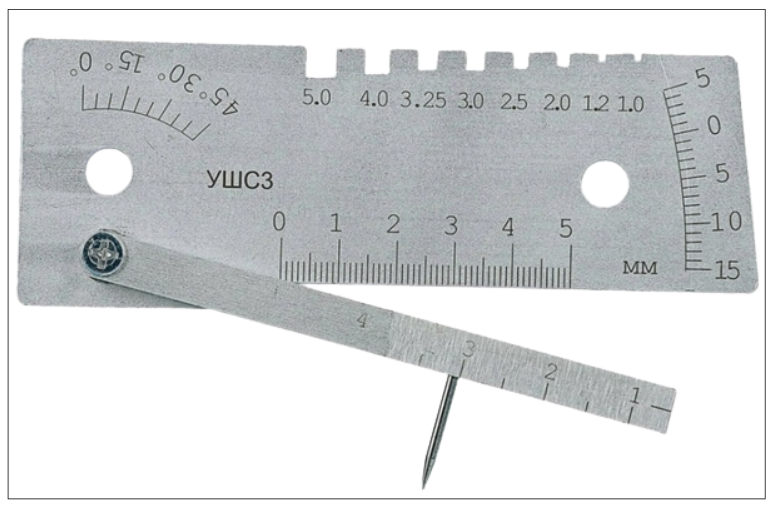
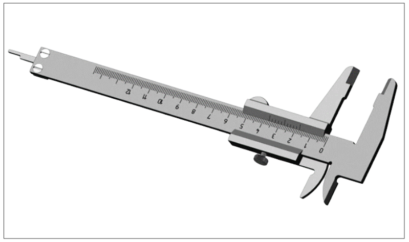
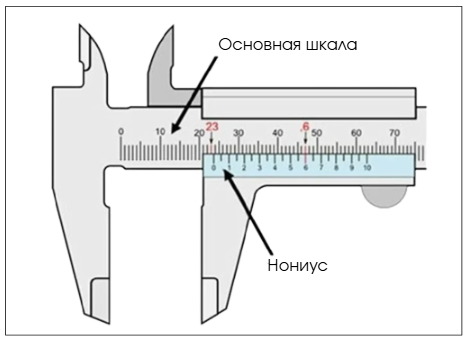
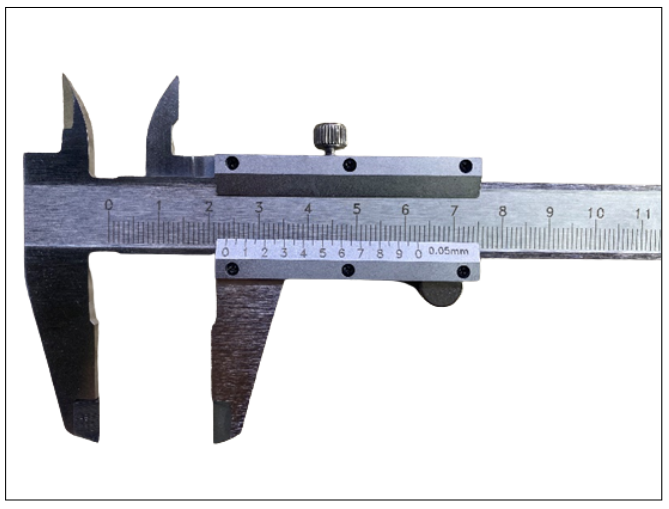

Визуально-измерительный контроль

На этом уроке вы освоите метод визуально-измерительного контроля. Для этого мы познакомимся с основными инструментами и научимся ими пользоваться, а также узнаем, кто может проводить визуально-измерительный контроль и составлять акты. В конце урока вы потренируетесь самостоятельно определять значения по одному из представленных инструментов.
Визуально-измерительный контроль – это метод неразрушающего контроля, который основывается на принципе внешнего подробного осмотра и измерения сварных соединений.
С помощью этого метода можно обнаружить поверхностные дефекты:
Презентация
Скачать PDF · штатный экспорт с пустыми персональными полями.

Источник и ограничения. Проверка ответов и персонализация зависят от исходного сайта. Локальные файлы сохранены в том виде, в каком были доступны.
А при помощи инструментов, которые имеются в наборе для ВИК измерить данные дефекты и внести их в протокол осмотра.
Перейдем к видео. В нем я показала, из каких инструментов состоит мой личный набор для проведения визуально-измерительного контроля.
Вариантов комплектов для визуально-измерительного контроля большое количество. Давайте рассмотрим самые популярные инструменты для измерения.
УШС-3. Универсальный шаблон сварщика

Схемы применения данного инструмента указаны ниже.
Штангенциркуль.
Популярный инструмент, который находит свое применение не только при контроле сварочных соединений, но и при контроле толщин, диаметров и т.п.

Инструмент хоть и популярный, но иногда вызывает сложности в применении. Разберем, как правильно считывать значения.
- Проверьте инструмент на отсутствие загрязнений.
- Откройте щеки так, чтобы деталь могла свободно поместиться.
- Закройте щеки, чтобы они плотно примыкали к детали, но стоит зажимать слишком сильно.
- Считывайте измерение.
- Снимите штангенциркуль.
Как правильно считать результат
Использование такого простого, на первый взгляд, инструмента, как штангенциркуль, порой, вызывает некоторые трудности. В этой части урока мы приведем вам несколько примеров работы с инструментом, а после вы самостоятельно потренируетесь считывать с него показания.
Пример 1.
Сначала считываем показания с основной шкалы.

На рисунке видно, что основное значение 23 мм. Далее деление 0 по шкале нониуса останавливается между цифрами 23 и 24, поэтому считываем десятые значения. По шкале нониуса ищем деление, которое будет совпадать с делением на основной шкале. На рисунке – это цифра 6.
У штангенциркулей есть своя точность, она указана на инструменте. В данном случае цена деления нониуса 0,1 мм.
Суммируя значения основной шкалы и шкалы нониуса, можно сделать вывод, что размер детали 23,6 мм.
Пример 2.
Сначала считываем показания с основной шкалы.

На рисунке видно, что основное значение 23 мм. По шкале нониуса ищем деление, которое будет совпадать с делением на основной шкале. Это цифра 6. Точность данного инструмента 0,05 мм
Суммируя значения основной шкалы и шкалы нониуса, можно сделать вывод, что размер детали 23,6 мм.
Перед вами три фото с разными значениями измерений. Определите значение по каждому снимку и выберите правильный вариант ответа. Если вам удастся ответить на все вопросы верно, то и в реальности работа с штангенциркулем не вызовет у вас затруднений.
Лупы
Их используют для контроля близко расположенных деталей (не более 250 мм от глаз контролера). С их помощью можно обнаружить мелкие трещины, незакрытые раковины, начальные очаги коррозии, излишнюю пористость, непроваренные участки и многие другие дефекты сварного шва.
Лупы в наборах ВИК бывают:
Illustration

Текст встроенного материала
Лупы с подсветкой
Измерительные лупы
Источник и ограничения. Проверка ответов и персонализация зависят от исходного сайта. Локальные файлы сохранены в том виде, в каком были доступны.
Чтобы официально проводить визуально-измерительный контроль, оформлять и пописывать протоколы, необходимо пройти обучение по уровню квалификации 2 согласно ГОСТ Р ИСО 9712-2009 и СДАНК-02-2020 в специализированных, аттестованных центрах.
Важно отметить, что существуют допустимые и недопустимые дефекты сварного шва. Их классификация указана в ГОСТ 30242-97. Я собрала основные дефекты в удобную памятку, которую вы можете сохранить для своей дальнейшей работы.